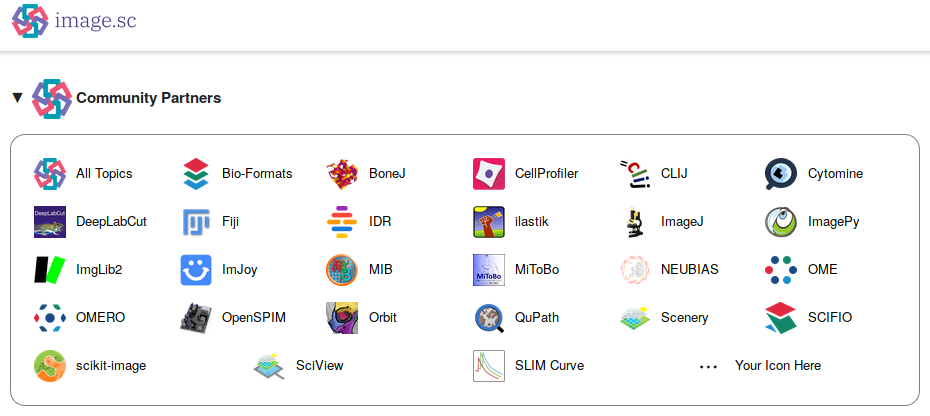
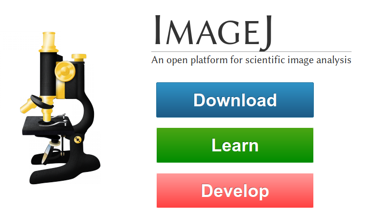
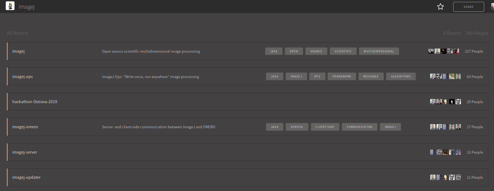

Contributing to Fiji
Communication channels
- Forum
- Github
- Wiki
- Gitter
- Mailing list
Forum
image.scdiscussions, announcements (events, jobs), examples, scientific discussions, issues...
Communication channels
Github
github.com/imagej/ github.com/fiji/Issues which can be assigned to a specific repository, PRs, contributions
Communication channels
Wiki
imagej.netDocumentation (update sites, plugins, architecture, events, ..)
Communication channels
Gitter
Development discussions, event live support
Communication channels
! not transparent, not sustainable
anything but discussions (share link to discussion), teaser :)

Communication channels
Mailing list
use the forum
Communication channels
Ways to contribute
- Communicating with the community
- Reporting bugs / feature requests
- Sharing your own scripts and plugins
- Working on the core
- Teaching
- Funding
Communicating with the community
- Using Fiji and giving feedback (actively or via statistics)
- Sharing work in progress
- Sharing data
Ways to contribute
Reporting bugs / feature requests
- If you don't know where to file an issue, ask in the forum
- Describe the steps to reproduce the issue, what you expected to happen and what happened instead
Ways to contribute
Sharing your own scripts and plugins
- imagej.net/Development_Lifecycle
- imagej.net/Distribution
- Use update sites
- Add documentation to imagej.net
- Announce on forum
Ways to contribute
Working on the core / contributing to repositories of others
- imagej.net/How_to_contribute_to_an_existing_plugin_or_library
- Discuss nature / structure of changes early
- You can now create PR drafts on github
- Review PRs, assign issues
Ways to contribute
Teaching
- Use / improve imagej.net/Introduction
- imagej.net/Upcoming_Events
- Software Carpentry strategies
Ways to contribute
Funding
- Create positions for Research Software Engineers
- Support Software Carpentry training
Ways to contribute